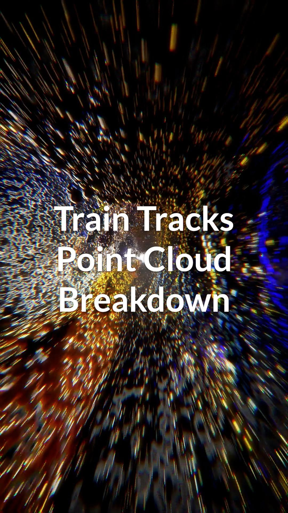

ARTECHOUSE
As in-house video lead, I produced social video and evergreen content across exhibitions and campaigns. During that work, the Instagram account grew from 500K to 910K followers.
View ARTECHOUSE and other brand workI build content from the first idea to the final post: strategy, production, and distribution. My work connects technology and culture with the people following what comes next.
Instagram followers
Grew the account as in-house video lead.
Account growth over six months
Follower growth over six months. Relative audience size.
Followers
Built from the ground up around technology and 3D.
As in-house video lead, I produced social video and evergreen content across exhibitions and campaigns. During that work, the Instagram account grew from 500K to 910K followers.
View ARTECHOUSE and other brand work
As a content producer for KIRI Engine, I explain 3D scanning and capture workflows through social content and hands-on demonstrations. The account doubled its following over six months.
View KIRI Engine and other brand workI built an audience from zero to 100K followers by sharing 3D workflows, AI tools, and experiments in spatial capture.